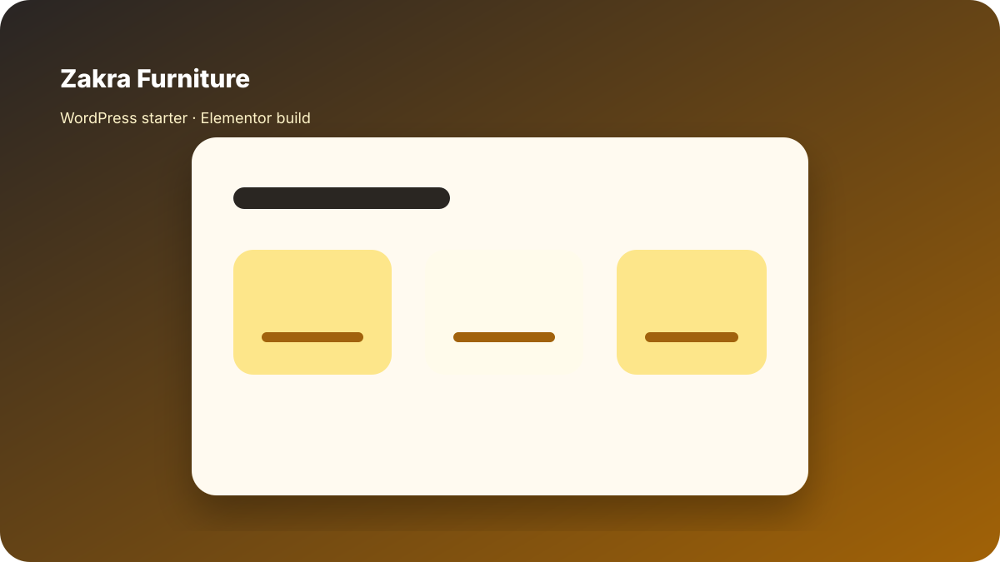

Zakra Furniture
Designed and built a furniture starter website using Zakra and Elementor, focused on clean product presentation, reusable business sections, and responsive WordPress page design.

Role
Designer / WordPress Builder
Tools
Zakra, Elementor, WordPress
Focus
Product presentation and responsive layout
What I worked on
- Furniture homepage layout and product-focused sections.
- Elementor-based page build.
- Reusable section patterns for small business websites.
- Responsive presentation and visual hierarchy.
- WordPress starter-site structure.
This page reflects practical WordPress and Elementor design/build experience.